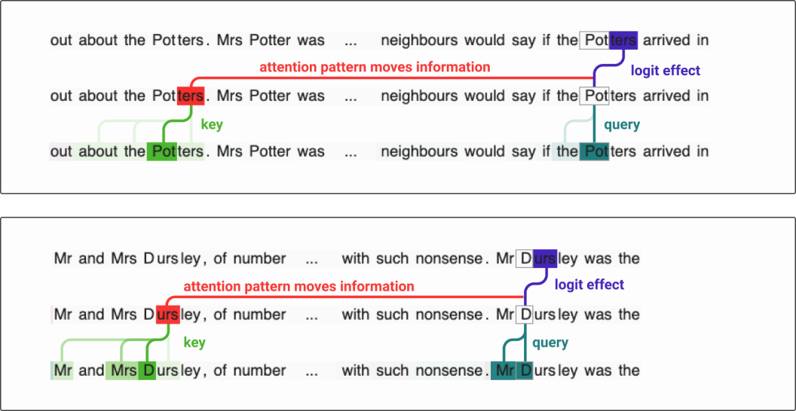
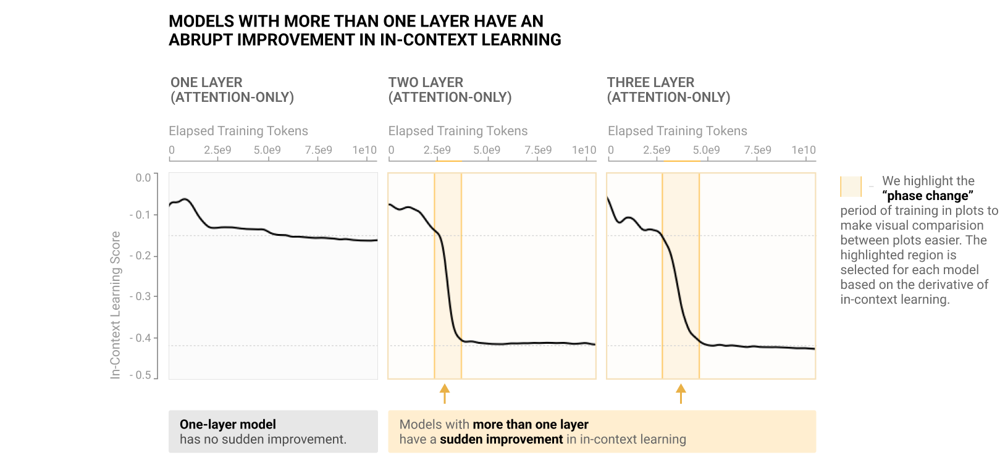
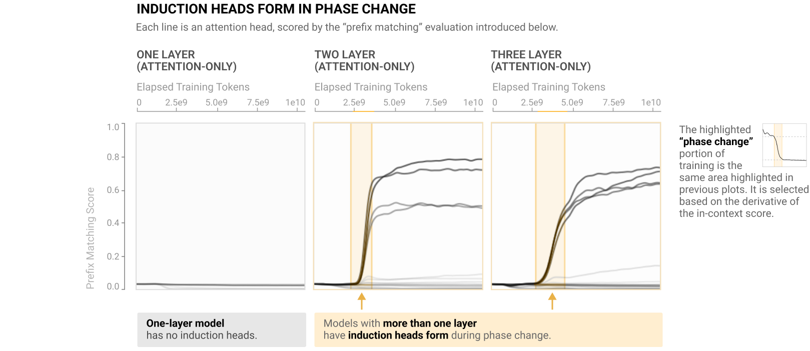

In-context Learning and Induction
October 10, 2024 • Nikita Demidov, Prajnan Goswami
Can we teach a Large Language Model (LLM) a new task without finetuning it?
The anwer is In-context Learning(ICL) where the LLM performs a new task by prompting the model with
input-output examples demonstrating the task. This remarkable behaviour was first shown in
GPT-2
and caught more traction in GPT-3.
Jason Wei, who is an AI researcher at OpenAI(previously Google Brain) further showed the potential of
ICL through his work on
Chain-of-Thought Prompting Elicits Reasoning in Large Language Models.
How can we better understand In-context Learning(ICL)?
As In-context Learning led to the development of customized LLM applications tailored for specific use cases, it became increasingly important to understand how these large Transformer based langauge models were able to solve new tasks by merely looking at examples in the prompt.
In the previous chapter, we delved into the inner workings of a Transformer. One key takeway from it was how attention heads can be decomposed into Query-Key(QK) and Output-Value(OV) circuits. More importantly it showed how these independent circuits mapped input tokens to output tokens.
Leveraging this Mathematical Framework of Transformers, the same authors at Anthropic introduced the notion of Induction Heads. Chris Olah known for reverse engineering artificial neural networks for human interpretability first discovered this phenomenon in a 2-layer model. Together with Catherine Olsson, Nelson Elhage and Neel Nanda led the systematic study of this phenomenon to better understand how in-context learning works.
This chapter focuses on the role of Induction Heads in In-context Learning and provides a high level walkthrough of how it works.
What is an Induction Head?
Induction heads were discovered in the paper A Mathematical Framework for Transformer Circuits while studying the behavior of the two-attention layer transofmers. These heads impressed the authors (Olsson, Elhage and Nanda) so much they authored the creation of the paper In-context Learning and Induction Heads to further explore the impact of the induction heads on the in-context learning. The Original Paper also gives the mechanistic interpretation of the induction head and how it works in the transformer modelIntuitive Explanation
An Induction Head is a special type of attention mechanism inside transformer models, responsible for recognizing repeating patterns in a sequence of tokens and predicting the next token based on past patterns. To break it down, an induction head works as follows:
- Previous Token Head: This attention head looks back at the sequence of tokens to find where a certain token has appeared before. It doesn’t just look at a single token but captures sequences. For instance, if the sequence "cat sat" has appeared earlier and the model sees "cat" again, the Previous Token Head recalls that "sat" followed "cat" in the earlier context.
- Induction Head: Once it retrieves the past sequence ("cat sat"), the Induction Head predicts that "sat" will likely be the next word after "cat". It essentially tries to extend the previous pattern.
Quick recap on the Mathematical Framework for Transformer circuits
Recall from the previous chapter the concepts of QK and OV circuits:
Query-Key Circuit (QK): This determines how much attention a given token (the query) pays to previous tokens (the keys). It calculates attention scores to decide which previous tokens are relevant for predicting the next token.
Output-Value Circuit (OV): This determines how the token attended to (the "value") influences the final prediction of the model. It directly impacts the logits (predicted probabilities for each possible next token).
There is also the concept of Q, K, and V compositions. Compositions are products of multiple attention layers that enable a more complex flow of information. They are distinguished based on which weight matrix is used to read in the subspace of the residual stream:
- Q-composition uses the \(W_Q\) matrix.
- K-composition uses the \(W_K\) matrix.
- V-composition uses the \(W_V\) matrix.
Q and K compositions impact the results of the QK circuits, while V composition affects the OV circuit.
Mechanistic Interpretation of Induction Head
The paper formally defines the induction head as exhibiting the following two properties on a repeated random sequence of tokens:
- Prefix matching is achieved mostly through the K-composition of the QK circuit, meaning the key vector is trained to attend to the preceding tokens. The induction head uses the K-composition (\(W_k\) matrix) to retrieve information about the preceding token from the residual stream.
- Copying is achieved through the OV circuit. The mechanistic paper proved that many transformers exhibit copying behavior through the OV circuit.
In summary, the model first learns that a prefix follows the current token, passes this information through the residual stream, and the induction head retrieves this information and copies the prefix into the output.
The image is the summary of how the induction head is done visually 
Induction Head Visualization and Colab Demo
The demo we have created for the post shows the attention heads themselves on a small toy model. We can clearly see which head is the induction head based on the activations and the information contributions. You can find the link to the colab here
One of key resource to build a deep understanding of Induction Heads is the walkthrough by Callum McDougall. It is a really good visual representation of how the induction heads are formed with all of the underlying math. Callum is also an author of the fork of CircuitVis, a library that we use in our demo to demonstrate the behavior of the Attention heads.
Now knowing what induction is and how it is formed, we need to now understand why they are so important, and why and how they contribute to the in-context learning.
How Much Induction Heads Contribute to In-context Learning?
Olsson et al. used these findings and presented six arguments with emperical evidence that induction heads contribute significantly to in-context learning.
We highlight one of these arguments where the authors demonstrate a phase change early in training, during which induction heads are formed and in-context learning improves dramatically.

During this phase change, the number of induction heads with prefix matching properties increases significantly. If we assume the former definition of the induction head as a prefix matching attention head, we see increase in heads that exhibit this property. And it is happening exactly at the time of the phase change.

Nikita's Opinion: The paper is acually was really easy and engaging to read, the biggest complication was to mechanistically understand the induction head itself. The visualizations are clean and do tell the story of the paper. On top of that, every argument has a table with to which models the support is best applied to, which shows the benefits and limitations for each argument. One thing I have just concerns about is to focus on the generalization of the in-context learning scoring methodology. While it does show the overall score, it is not much interperable on the concrete in-context tasks. Which is why I think the second paper, that does use the few-shot prediction scoring, is a great addition to the first one.